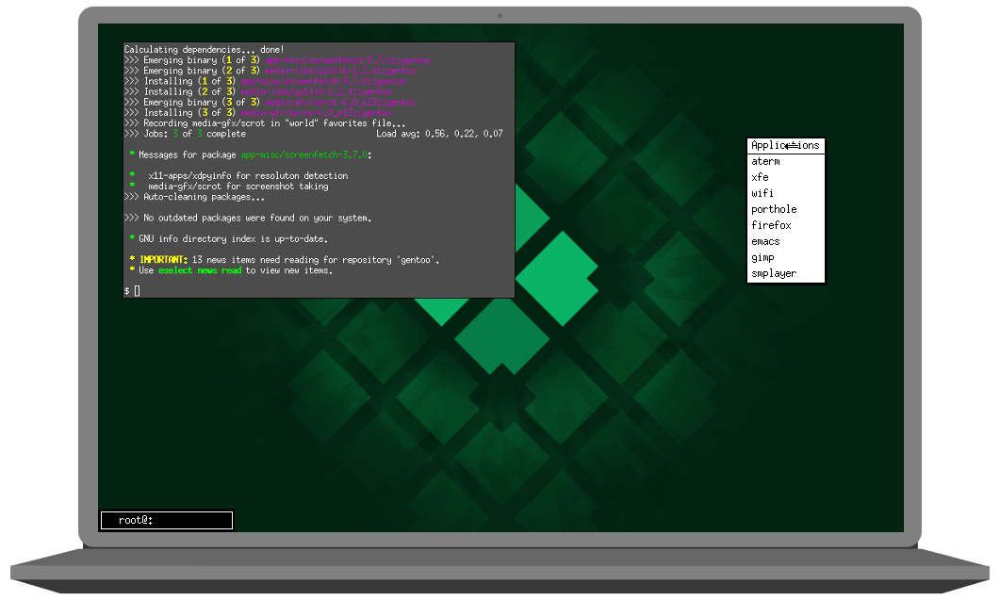

Minimal
Simple, functional, minimal
CloverOS was designed to work well, and look great while doing it. Multiple 'spins' allow for maximum customization, while still maintaining a minimal footprint.

Live
Gentoo made easy
Getting up and running on a Gentoo system has never been easier. Simply write the live iso to a flash drive and boot up. Our install script will have you up and running in no time!